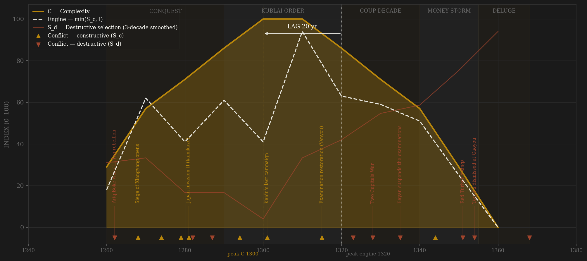
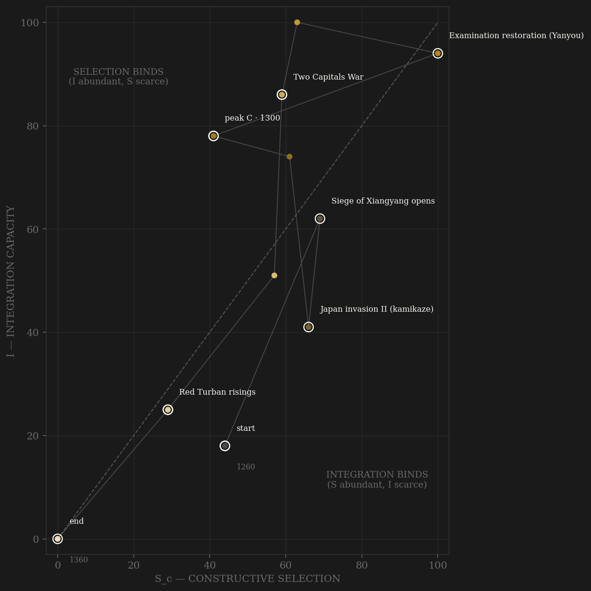

Yuan is the polity where channel A is defined by an absence. When Kublai proclaimed the dynasty, no civil-service examination had been held in the Mongol realm since Ogedei's one-off test of 1238 — and none would be until 1315. For the first five decades of the arc the measured jinshi series is a flat, true zero: the ladder did not exist. Recruitment ran on recommendation, hereditary kesig guard service, and — under the finance ministers Ahmad, Lu Shirong, and Sangha — open sale of office. The gold C curve rises anyway, and that is the point: Dadu and the re-engineered Grand Canal, Guo Shoujing's Shoushi calendar of 1280 (the best in the world for three centuries), the zaju drama's golden age, and a sea-grain lifeline that grew from 46,050 shi in 1283 to 3,522,163 shi at its 1329 peak — integration and complexity built by conquest capital, not contest. The Yanyou restoration of 1315 is the ledger showcase: a real reopening, fought through court by the Confucian revival, and simultaneously a ceiling made law — 100 degrees per triennium split 25/25/25/25 across Mongol, Semu, Hanren, and Nanren, so the 80%+ of the elite pool that was Chinese competed for half the seats on harder papers, while Mongol nobility kept routes that never faced contest at all. Measured throughput jumps from zero to 10–14 CBDB entries a year — a constrained trickle at the quota ceiling, roughly sixteen exams total to the fall. The engine's smoothed peak lands in the 1320s, riding peak exam throughput, peak appointments, and the grain-fleet maximum, while four emperors die in a decade — the machine on autopilot as the throne burns. Complexity's coded peak sits at 1300–1310, and at this resolution the −20 lag is indistinguishable from zero. The red line tells the real story of the fall: the chao paper currency — the world's first universal national paper money, at par in 1260 — hits 100:1 against silver by 1350 as the Zhizheng government prints for river works and civil war, then quotation simply ceases. The 1344 Yellow River flood breaks the canal junction, the conscripted repair gangs become the Red Turbans, Toqto'a is dismissed by edict mid-siege at Gaoyou in 1354 and his hundred-thousand-man army dissolves on the spot. The dynasty's last exams were held in 1366; Dadu fell two years later.

The trajectory enters mid-plot: selection moderate (the Song war and the steppe rivalries), integration already climbing as the yam network and the chao currency knit the conquest together. Through the Kublai decades it moves right along the integration axis with almost no vertical gain — a state acquiring extraordinary coordination while the contest ceiling holds selection down; by 1300 the Yuan sits deep in the selection-binds region, the H-RENT-001 shape drawn by statute rather than decay. The 1310s restoration produces the one vertical jump of the polity's life — the only decade the engine touches the diagonal — and it is immediately spent: the 1320s coup storm, Bayan's suspension, and the endogenous death of channel B (no peer rival remained after 1303) drag the path back down. From 1340 the trajectory falls along both axes at once and does not loop: grain fleet lost to the coastal warlords, currency to the printing press, appointments to the warlord courts. It dies at the origin — the only Chinese dynasty in the roster whose terminal decade sits at (0,0): no contest left to lose, no coordination left to lose it with.
Coded by locus and target, never by outcome. The Yuan ledger contains the sample's cleanest mirror: the conquest of Song is channel-B rivalry here — an external rival state, the Yuan's own machinery never touched — while the identical campaigns are S_d on the Song page, where Xiangyang and Yamen are core penetration. Locus is a property of the polity, not the war. The internal codings run the other way: Ariq Boke, Shiregi, and Nayan were rival claimants inside the house, not rival polities — S_d, however far from Dadu the fighting ran. The Two Capitals War of 1328–29 (four emperors in one decade; the succession file scores Yuan 0.73, the most violent of any major dynasty) is the S_d centerpiece, and Bayan's 1335 suspension of the examinations is policy-S_d by the Aurangzeb precedent: the state attacking its own incorporation bargain without drawing a sword. Gaoyou 1354 is the Yue Fei precedent at maximum amplitude — a chancellor dismissed by edict at the moment of victory, and the siege army dissolving into the rebellion it was besieging.
| YEAR | CONFLICT | CODE | CODING RATIONALE |
|---|---|---|---|
| 1262 | Ariq Boke war / Li Tan rebellion | Sd | Rival claimant inside the house splits the empire 1260–64; Li Tan's Han warlord defection + Wang Wentong's execution poison Kublai's trust in Chinese advisers — a channel-A consequence |
| 1268 | Siege of Xiangyang opens | Sc | Conquest of Song = external rival state by locus, Yuan machinery untouched — THE MIRROR: the same war is S_d core-penetration on the Song page |
| 1274 | Japan invasion I | Sc | External expedition; fleet lost to storm — losses load on E, locus never internal |
| 1279 | Yamen — Song extinguished | Sc | Terminal battle of an external conquest; frontier rule from the Yuan side of the mirror |
| 1281 | Japan invasion II (kamikaze) | Sc | Largest amphibious force of the premodern world destroyed by typhoon — external locus; the 1280s carry five external fronts at once (Champa, Vietnam, Burma, Kaidu) |
| 1282 | Assassination of Ahmad | Sd | Chief finance minister murdered at court by conspirators — violence inside the machinery (his rivals Lu Shirong and Sangha later fall by trial: that is C, not S_d) |
| 1287 | Nayan's rebellion | Sd | Manchurian princely revolt aimed at the khagan — claimant locus, Kublai takes the field personally |
| 1294 | Kurultai of Temur | Sc | The dynasty's ONE peaceful succession: rivals stand down at the kurultai — apex contest settled within rules, scores channel C |
| 1301 | Kaidu's last campaign | Sc | Forty-year Ogedeid rivalry dies with Kaidu; the 1303 pan-Mongol peace follows — victory kills the rivalry (Ili-1759 precedent) and channel B never recovers |
| 1315 | Examination restoration (Yanyou) | Sc | The ledger showcase: ladder reopened by court-process victory of the Confucian revival — AND capped by law at 25/25/25/25 across the four classes; partial contestability by construction |
| 1323 | Nanpo coup | Sd | Emperor Yingzong and chancellor Baiju murdered by their own guard corps — the machinery killing its head |
| 1328 | Two Capitals War | Sd | Full succession war, Dadu vs Shangdu; Kusala dead within a year of 'reconciliation'; four emperors in the decade — the 0.73 violent-succession rate at work |
| 1335 | Bayan suspends the examinations | Sd | Policy-S_d (Aurangzeb-jizya precedent): the state amputates its own incorporation bargain — exams dark 1336–40, proposals floated to bar Chinese from office |
| 1344 | Yellow River changes course | Sc | Exogenous shock, loads on E — but the conscripted repair works of 1351 become the recruiting ground of the rebellion: entropy manufacturing destructive selection |
| 1351 | Red Turban risings | Sd | Canal-conscription revolt aimed square at the coordination machinery — internal locus, the machinery itself the target |
| 1354 | Toqto'a dismissed at Gaoyou | Sd | Chancellor removed by edict MID-SIEGE at the moment of victory; his 100k army dissolves on the spot (Yue Fei precedent at maximum amplitude) |
| 1368 | Fall of Dadu | Sd | Ming northern expedition takes the capital; Toghon Temur flees to the steppe — S_d by locus (Alaric rule), terminal |
| COMPONENT | GRADE | BASIS |
|---|---|---|
| S_c — channel A, elite-entry (0.40) | ◐ measured shape + ○ ceiling | HYBRID (Dutch precedent): 0.5 measured CBDB jinshi/yr (ENTRY_DATA 36/37/124, 443 dated Yuan-exam entries 1315–1368; zeros 1276–1314 are TRUE measured zeros — exams suspended 1238–1315) + 0.5 coded contestability ceiling: four-class quota 25/25/25/25 of 100/triennium (Hanren+Nanren = 80%+ of pool capped at half the seats, easier papers for Mongols/Semu), Mongol hereditary kesig/yin routes closed to contest — coded A never exceeds 5/10. Southern Song exam entries dated 1260–74 EXCLUDED (rival polity, already on the Song page); one stray 1284 record excluded as dating error |
| S_c — channel B, peer rivalry (0.30 HARD CAP) | ○ scholar-coded | Locus-cleaned external ordinal: Song conquest to 1279 (the mirror — S_d on the Song page), Japan 1274/1281, Champa/Vietnam 1282–88, Burma, Java 1293, Kaidu to 1301, Esen Buqa 1314–18. Endogenous collapse: after the 1303 pan-Mongol peace no peer rival exists — B≈0 from the 1320s is victory + geography (Ili-1759 precedent), not peace-by-strength. Ming expedition 1367–68 = S_d by locus, not B |
| S_c — channel C, within-rules contest (0.30) | ○ scholar-coded | Kurultai successions count ONLY when settled without war (1294 alone qualifies); Confucian vs financial-administrator contests fought via edict/censorate (Lu Shirong tried 1285, Sangha falls by remonstrance 1291); paper-money policy debates (1287 Zhiyuan re-float, 1350 Zhizheng reform); Yanyou revival = C peak 1310s. Collapses when contest goes extra-institutional: Nanpo 1323, Two Capitals War, El Temur/Bayan dictatorships |
| S_d — Destructive | ○ scholar-coded (events dated) | Ariq Boke 1260–64, Li Tan 1262, Shiregi 1276–78, Ahmad 1282, Nayan 1287, 1307 purge, Nanpo 1323, Two Capitals War 1328–29 (succession file: violent rate 0.73 — highest of any major dynasty), Bayan purges + exam suspension 1335–40, Red Turbans 1351+, Gaoyou 1354, warlord war into Dadu 1364, fall 1368. CBDB punishment events: 12 dated rows in-window — too sparse to weight (Ming precedent), notes only |
| Sc_v1_combat (frozen synthetic) | ○ scholar-coded | Channel B alone (external-war-only — the prior definition's operative content), synthesized per the straight-to-v2 rule (Mughal/Gupta precedent); no v1 page ever existed for Yuan |
| I — Integration | ◐ measured + ○ coded | 0.30 CBDB appointments/yr (Yuan-tagged persons only, 9,200 rows — raw table contaminated by Southern Song rump appointments, 845 Song-tagged rows in the 1260s alone) + 0.30 maritime grain shipments to Dadu (Yuanshi ch.93 via Schurmann 1956: 46,050 shi 1283 → 3,522,163 shi 1329 peak → collapse when Fang Guozhen/Zhang Shicheng take the sea lanes; decade means approximated from Schurmann's table) + 0.40 coded (yam 200→1,400→400 stations Allsen/Endicott-West; Grand Canal complete 1289–93; chao as the first universal national paper currency) |
| C — Complexity | ○ scholar-coded | CODED ONLY: exactly one Maddison obs (1300, $500, flat) and one urban anchor row (1300: Dadu 401k, Hangzhou 432k) exist in-window — cited as calibration, never spliced; interpolating the 1400 anchor through the 1350s collapse would violate the never-interpolate rule. Anchors: Dadu 1267–93, Shoushi calendar 1280 (Guo Shoujing), zaju golden age, Wang Zhen's Nongshu + movable type 1313, Zhu Siben's map, Jingdezhen blue-white apex, Liao/Jin/Song histories 1343–45 |
| E — Entropy | ◐ measured arc + ○ shocks | HYBRID: 0.5 measured chao-debasement arc — log₁₀(silver:paper), Schurmann/Rossabi series: par 1260 → 2:1 by 1290 → 8 by 1310 → 25 by 1330 → 100:1 by 1350, quotation CEASES 1360s (coded strand carries the terminal row; the currency died before the dynasty) + 0.5 coded shocks: Hongdong earthquake 1303, Hebei epidemics 1331–34, Yellow River flood 1344, plague waves 1350s, Dadu famine, terminal collapse |
| R — Renewal (population) | ◐ anchors + interp | Ge Jianxiong anchors (chinese_population.csv): 90M at the 1234 Jin destruction → 70M at the 1271 census → 85M at the 1330 Yuan peak → 60M at 1368 — raw millions, war-depressed early, partial recovery, plague/flood/war collapse. Basis caveat: registered 1290 count ~58.8M; Ge's totals are corrected estimates on a census that never fully audited the south |
11 decade rows (1260…1360; the 1360 row covers 1360–1368) built from local corpora by scripts/build_yuan_sicre.py — a straight-to-v2 contestability build (AMENDMENT_S_definition_v2.md): Sc_constructive = 0.40 elite-entry (HYBRID: 0.5 measured CBDB jinshi/yr — 443 Yuan-exam entries 1315–1368, true zeros through the 1238–1315 suspension — + 0.5 coded four-class-ceiling ordinal) + 0.30 peer rivalry (hard cap, locus-cleaned; the Song-conquest mirror) + 0.30 within-rules contest; Sc_v1_combat = channel B alone, synthesized per the straight-to-v2 rule (no v1 page ever existed). Ledger: data/raw/yuan/coding_ledger_v2.csv; audit: components_audit.csv; provenance + exclusions (Southern Song exam/appointment contamination, the stray 1284 jinshi, the Shilu index's Ming provenance): data/raw/yuan/SOURCES.md. FROZEN-PROTOCOL LAG UNDER BOTH DEFINITIONS (3-decade centered rolling mean, engine=min(Sc,I)): v2 engine 1320 → C 1300 = −20 FAIL; v1 engine 1280 → C 1300 = +20 PASS. SHORT-SERIES CAVEAT (Athens precedent, and worse): 11 rows is the SHORTEST series in the sample — one smoothing window spans ~27% of the polity's life, so peak locations are coarse. UNSMOOTHED sensitivity: v2 engine 1310 → C 1300 = −10 SIMULTANEOUS; v1 engine 1290 → C 1300 = +10 SIMULTANEOUS. Exact smoothed-C tie (Gupta precedent): smoothed C ties 1300/1310 exactly; idxmax takes 1300; taking 1310 gives v2 −10 SIMULTANEOUS, v1 +30 PASS. HONEST SUMMARY: all verdicts under all treatments land in {−20…+30} — at this resolution the engine and complexity peaks are statistically indistinguishable, and the headline FAIL/PASS labels are one decade of wiggle apart; Yuan should carry near-zero weight in any pooled lag test. The v2 engine peak is not crisis contamination (Rome diagnostic run): the 1320s engine rides measured exam throughput at its dynasty peak (10.2 entries/yr), the sea-grain maximum (3,522,163 shi, 1329) and the CBDB appointment peak — the coup storm loads on S_d (88/100), not the engine. Rebuild: ~/grove/venv/bin/python ~/vitalic.stoicism/scripts/build_yuan_sicre.py, then polity_report.py --slug yuan